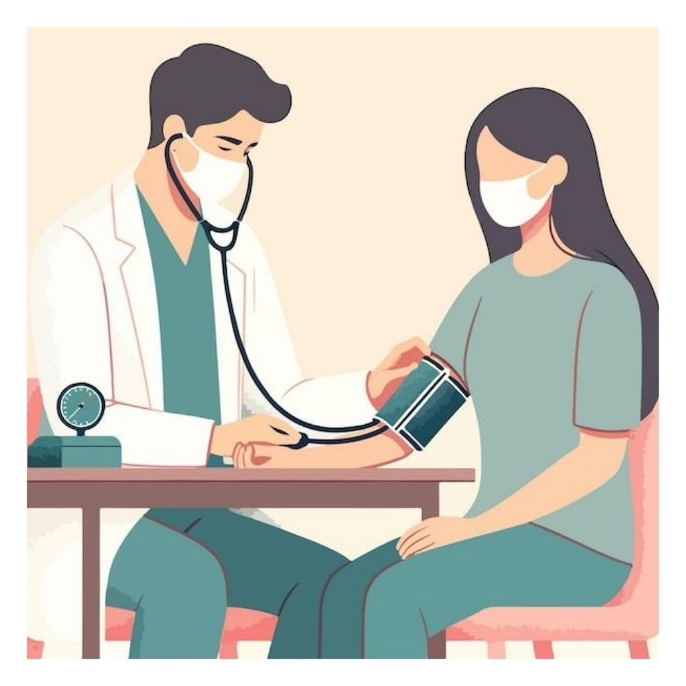
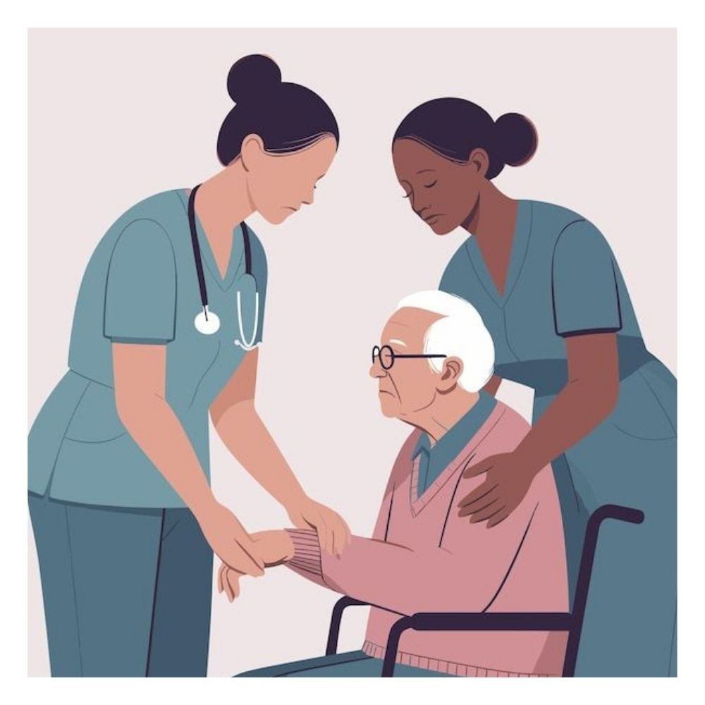

ARTIKEL KESEHATAN


Video Artikel 1: Judul Video Anda
Video Artikel 2: Judul Video Anda
NAMA-NAMA PERAWAT
Erina Suryana, S.Kep.
Fitriyani, S.Kep.
Ghina Sausan Amirah, S.Kep.
Lisna Septriani, S.Kep.
Siti Nurfadilah, S.Kep.
Yayu Rismaya, S.Kep.
TENTANG KAMI
Apa itu Kazoku homecare?
Kazoku homecare adalah pelayanan homecare berbasis online yang melayani perawatan pada pasien yang membutuhkan pelayanan lanjutan dirumah.
Tim perawat profesional dan terlatih kami siap membantu Anda dan keluarga dengan berbagai kebutuhan medis, mulai dari perawatan pasca-operasi, manajemen penyakit kronis, hingga perawatan paliatif. Kami mengutamakan keamanan, kenyamanan, dan privasi pasien dalam setiap layanan yang kami berikan.
Bersama Kazoku Homecare, kami hadir untuk menjadi bagian dari keluarga Anda, memberikan dukungan dan ketenangan pikiran melalui pelayanan kesehatan yang terpercaya.
“Kazoku Homecare – Merawat dengan Hati, Sehangat Keluarga.”
[Stikes Budi Luhur, Leuwigajah Jl. Kerkof No.243]